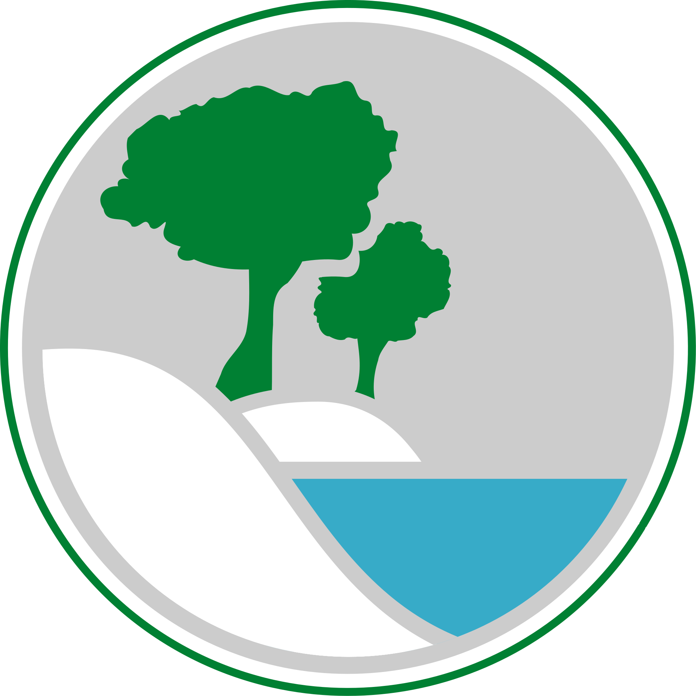

Priroda

Matematika

Cilj ove stranice je pripremiti dijecu za osnovnu školu. Ovdje možete pronaći jednostavne zadatke koji će vašem školarcu pomoći da započne svoje obrazovanje s lakoćom. Nudimo razde vrste zadataka prirode matematika i hvatskog jezika. Zadaci su lagani, a za one naprednije imamo jako puno linkova koji će vas odvesti na stranice sa zahtjevnijim zadacima.
Krenimo!